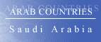
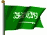

The Country & People of
Saudi Arabia
This page contains links to sites in Saudi Arabia and Saudi Arabia related sites.
For Middle East, North Africa, Arab and regional information visit Arab Countries
Hints:
- Use the "FIND" function in the Edit menu of your browser to search the page
- Use translating services in Chrome or Bing Bar in Internet Explorer to view page and/or linked websites in your language
General Info
* Business
* Culture
* Education
* History
* Media
* Organizations
* Travel
* Gateways
* Arab Countries
Saudi Arabia, officially Kingdom of Saudi Arabia, kingdom (1995 est. pop. 18,730,000), 829,995 sq mi (2,149,690 sq km), SW Asia, occupying most of the Arabian peninsula, bounded by
Jordan, Iraq, and Kuwait (N), the Persian Gulf, Qatar, and the United Arab Emirates (E), Yemen and Oman (S), and the Red Sea (W). Riyadh is the capital, Jidda the principal port.
Saudi Arabia has five major physical regions: the great Rub al-Khali, a sand desert occupying the entire south and southeast; the Nejd, a vast, barren plateau in the center; the Hejaz and
Asir, along the Red Sea, with mountains rising from an arid coastal plain; and the Eastern Province, along the Persian Gulf, site of the country's rich oil resources. The climate is usually
hot and dry, although the humidity along the coasts is high. Saudi Arabia has at least one quarter of the world's oil reserves, and the oil industry dominates the economy. Huge revenues
from oil exports have been used to diversify the industrial base; metals, chemicals, plastics, cement, and fertilizer are now produced. Irrigation projects have reclaimed many acres of
desert, and grains, dates, citrus fruits, and vegetables are grown. Nomadic Bedouins raise camels, sheep, goats, and horses. Income is also derived from Muslim pilgrims who travel from
all parts of the world to the holy cities of Mecca and Medina. The overwhelming majority of the population are Arabs who adhere to the Wahhabi sect of Islam, but 27% of the population
consists of resident foreigners. Arabic is the official language.
History
Arabia has been inhabited for thousands of years by nomadic Semitic tribes. With the birth (AD 570) of Muhammad, in Mecca, Arabia was briefly the center of Islam, but by the end of the
7th
centuary the area was disunited. Modern Saudi Arabia owes its existence to Ibn Saud, an adherent of the Wahhabi Muslim sect.
Beginning in 1902 he conquered the Nejd, Al Hasa, and Hejaz regions, and in 1932 he proclaimed himself king of a united Saudi Arabia.
Oil was discovered in 1936; commercial production began in 1938.
Ibn Saud died in 1953 and was succeeded by his eldest son, Saud.
In 1964 Saud was deposed by Faisal, who secured (1974) an agreement giving the Saudis a 60% majority ownership of foreign oil concessions in their country.
In 1975 Faisal was assassinated; he was replaced by Khalid, who inaugurated a program of industrialization and social welfare. In the conflict with Israel, Saudi Arabia has generally
supported the Arab states, although as a friend of the U.S. it is a somewhat moderating force. Its moderating influence has also been felt in the Organization of Petroleum Exporting
Countries (OPEC), in which it usually has acted to stabilize petroleum prices.
Khalid died in 1982 and was succeeded as king by Fahd. Military clashes, oil-policy disputes, and rioting Iranian pilgrims in Mecca led Saudi Arabia to sever diplomatic relations with Iran in 1989.
In 1990 the kingdom joined the coalition that opposed Iraq's forcible annexation of Kuwait, and the forces of the coalition were largely based in N Saudi Arabia.
In 1992 King Fahd decreed a new constitution; among its features were an appointed national council (est. 1993) with the right to review, but not overrule, government acts.
However, the royal family's power was basically undiminished. In the late 1990s, Crown Prince Abdullah, the king's half-brother and heir to the throne, effectively became the country's
ruler due to King Fahd's poor health. Under the crown prince, the country has been more openly frustrated with and critical of U.S. support for Israel. A treaty with Yemen that ended
border disputes dating to the 1930s was signed in 2000, and early the next year both nations withdrew their troops from the border area in compliance with the pact.
The Saudi government restricted the use of American bases in the country during the U.S.-led invasions of Afghanistan (2001) and Iraq (2003), and by Sept., 2003, all U.S. combat forces
were withdrawn from the country. Also in 2003, the king issued a decree giving the Shura the authority to propose new laws without first seeking his permission. The move was perhaps
prompted in part by rare protests in favor of government reform; the kingdom also was shaken by violent incidents, including a massive car bomb attack against a residential compound in
Riyadh, involving Islamic militants. Such terror attacks continued into 2005.
The country held elections for municipal councils in Feb.—Apr., 2005, permitting voters (men only) to choose half the council members; the rest of the members were still appointed.
King Fahd died in Aug., 2005, and was succeeded by Abdullah.
In Nov., 2009, fighting in N Yemen spilled over into Saudi Arabia when Yemeni Shiite rebels crossed the border. Saudi forces fought the rebels and sought to drive them back into Yemen and
away from the border; the conflict ended by Feb., 2010, with the rebels withdrawn into Yemen (and a truce established there).
In early 2011 Saudi Arabia experienced relatively small-scale antigovernment protests compared to other Arab nations, and those were at times harshly suppressed; many demonstrations
involved Shiites. Protests and confrontations continued to a limited degree into 2012. Saudi forces also helped suppress antigovernment demonstrations in neighboring Bahrain. At the
same time, the government lavished funds on government employee bonuses, low-income housing, and religious organizations. Later in the year, the king announced that women, who have had
limited civil rights in the country, would be allowed to participate in municipal elections after 2011 and would serve on the Consultative Council; in 2012 women were appointed to a fifth
of the Council seats.
King Abdullah died in Jan., 2015, and was succeeded by Crown Prince Salman , his half brother. Saudi forces led Arab air attacks against Houthi rebels and their allies in Yemen after
Yemen's president was forced to flee the country in Mar., 2015; there also were clashes along the Saudi-Yemen border. The execution of Sheikh Nimr al-Nimr, a Shiite cleric, as part
of mass execution of 47 condemned prisoners in Jan., 2016, was bitterly condemned by Iran; Saudi Arabia then broke off diplomatic relations with Iran.
In June, 2017, King Salman named his son Mohammed bin Salman crown prince, replacing his nephew and former heir apparent Mohammed bin Nayef. The king had previously appointed his son
defense minister and head of a council charged with overseeing the economy. Saudi Arabia, along with the United Arab Emirates, Bahrain, Egypt, and a few other nations, broke diplomatic
and economic ties with Qatar in June, 2017, accusing it of supporting jihadi groups and destabilizing the region; Qatar rejected the nations' accusations and demandsand when tensions
eased in Jan., 2021, the pre-2017 situation was largely restored as well. In November of 2017, an anticorruption drive led to the investigation of several hundred prominent Saudis, many
of whom paid large settlements and were pardoned (while also remaining under government surveillance); the campaign also was seen in part as an attempt by Mohammed bin Salman, regarded
as the country's de facto ruler, to consolidate his power. The country also sought that month to force Lebanon's prime minister, Saad Hariri, to resign, in a possible attempt to
discredit Hezbollah.
The Oct., 2018, murder of Saudi journalist Jamal Khashoggi in the Saudi consulate in Istanbul, Turkey, led the Turkish government to denounce and discredit the Saudis repeatedly, as the
Saudis first denied that any killing had taken place and then several times changed their story concerning the killing before announcing arrests in the case. The murder provoked
international outrage and damaged the reputation of the country and of Mohammed bin Salman.
In Mar., 2020, the king's full brother and the former crown prince were arrested; the two were seen as potential rivals to the crown prince's succession.
********
Copyright (c) 2012 Columbia University Press.
Used by permission of Columbia University Press.
General Info
General information, Cities, towns, municipalities, places, flag, maps, useful Information....
Business
Economy, reports, statistics, banks, directories, jobs, investment, promotion....
Culture
General resources, heritage, art, literature, photography, cinema, music, song, dance, cultural, scientific,
environmental, health, sporting entities & info....
Education
Schools, colleges, academies, universities, polytechnics, institutions, research, resources, projects....
History
Ancient & modern history, human rights, politics & political parties, related sites, articles....
Media
Newspapers, magazines, news, jornals, newsletters, news agencies, radio, TV, internet, articles, reports, cartoons....
Organizations
Government, ministries, overseas missions, embassies, corporations, organizations, industrial entities, centers,
public hospitals, institutions, societies, associations, foreign entities....
Travel
Airlines, air, sea & coach charters services, travel, tours, guides, hotels, resorts, inns, hostels, health,
travel tips, weather....
Gateways
Gateways, search engines and directories to country related sites and information....
Arab Countries
Arab World: Middle East, North Africa, Arab and regional information. Resources to other Arab countries....
About Saudi Arabia
General Information Also see Travel
- ArabInfo Overview, government, history, links
- ArabNet Overview, history, geography, business, culture, government, transport, tour guide, links
- Atlapedia Geography, climate, people, demography, religion, education, modern history, currency, other information....
- Britannica.Com Country info, land, people, economy, society, government, history, culture, maps, statistics, links....
- CIA World Factbook Map, geography, people, government, economy, communications, transportation, military, issues
- Country Reports Economy, defense, geography, government, people, anthem, map, news, weather, links....
- Info Please General info, map, geography, government, history, land & people....
- Nation By Nation Info, government, human rights, news, geography, history, people, links....
- Saudi Arabia Information Resource More than 2,000 pages of information on every aspect of the Kingdom of Saudi Arabia
Cities, Towns, Municipalities & Places
- Diriyah Where the future is enriched by the wisdom of the past
- Emirate Of Hael Province Ensuring the implementation of the country’s general policy in the region
- Hail General info, maps, photos, directory....
- Mecca The holiest city in the world in Islam. The surrounding areas are unsurpassed in its historical and religious significance
Flag, Maps, Useful Information....
- Ethnologue Languages
- Flag Explanation, historical, military & political flags, subdivisions, national emblem....
- World Atlas A brief description, fast facts, flag, landforms, maps, traveller info, weather
- World Clock Local time, sunrise, sunset, GMT offset, daylight saving....
- Saudi Paper Money Paper currency since 1953
- Saudi Coins Coins currency since pre KSA
General Info
* Business
* Culture
* Education
* History
* Media
* Organizations
* Travel
* Gateways
* Arab Countries
Business and Economy
General, Economy, Reports & Statistics
- Australian Department of Foreign Affairs and Trade Fact sheet, travel information, trade watch
- Bilateral Relations with Japan Diplomatic, investment, economic cooperation, residents....
- Business Etiquette and Culture A guide for doing business ....
- Chamber of Commerce Eastern Province
- Chamber of Commerce & Industry Hail
- Chamber of Commerce & Industry Jeddah
- Council of Saudi Chambers Concerned with joint interests of Saudi Commercial and Industrial Chambers
- Data Arabia Saudi Business Directory, Government Directory, Saudi Royal Family Directory
- MBendi Business information, news, industries, events
- Muslim Trade Network Trade reference directory and guide....
- Organization of the Petroleum Exporting Countries - OPEC Statistics....
- Ports Focus Ports, harbours, marinas....
- Saudi Commercial Office A business guide to KSA
- Saudi Customs Management of many departments and customs ports throughout the Kingdom
- Saudi and the IMF Position in the fund, reports....
- Saudi Ports Efficient, fully equipped ports that are capable of doing the job as it should be done
- US - Saudi Business Council To promote trade and investment between the two countries
- US Department of Energy Analysis, information, oil, natural gas, coal, electricity....
- US Department of State Country commercial guide 2001 (pdf)
- US Department of State Country reports on economic policy and trade practices - 1999
- World Bank
Overview, news & events, data & statistics, publications & reports, development topics, projects & programs, Public Information Center
- World Trade Organization - WTO
Provides trade statistics, goods schedules, services schedules and MFN exemptions, trade policy reviews, dispute cases, and notifications
Banks
- Al-Bank Al-Saudi Al-Fransi Supports you from the very begining....
- Al Rajhi Banking and Investment Serving the needs of the nation and its citizens
- Arab National Bank (ANB) A global leader in exploiting technology to serve business needs
- Saudi British Bank A leader in offering its customers a full range of banking services
- Saudi American Bank Formed to take over the existing branches of Citibank
- Saudi Hollandi Bank Professionalism and superior customer service
- Saudi Investment Bank A full range of personalized and professional banking services
- Saudi Stock Exchange Companies, quotes, other markets, strategies
Directories, Job Opportunities
- AllSaudi Saudi money and business directory
- Career Saudi Online recruiters
- Mawaride E-recruitment in the Middle East
- Saudi American Bank Jobs in Saudi Arabia catogrised by Top Employer, Industry, Company, City ....
- Saudi Ad Free classified ads
- Saudi Jobs Employment opportunities in KSA
- Tauzeef Specialized in staffing services and training programs
- Twdeef Jobs advertisment gate
Investment & Promotion....
- Dhahran International Exhibition Center The ideal business platform to establish and further your business. Dhahran....
- General Investment Authority Comparing old & new investment laws, license applications
- Saudi Arabian General Investment Authority To promote Saudi Arabia as a destination for profitable investment
- Saudi Dates Market Special specifications have to be met by producers
- Saudi Export Developing Center To promote Saudi non-oil exports by all possible means
- Saudi Export Program Providing financing and insurance to facilitate the development of non-oil exports
- US-Saudi Arabian Business Council To promote trade and investment between the two countries
General Info
* Business
* Culture
* Education
* History
* Media
* Organizations
* Travel
* Gateways
* Arab Countries
Art, Culture & Sport
General Resources, Heritage....
- Lamsa Traditional dresses, swords & daggers, silver & silver alloy, framed antiques, Arabian jewelry
- Virtual Tour An American woman acts as your Virtual Tour Guide to Saudi Arabia
Art, Literature, Photography, Cinema....
- Zaman Mohammad Jassim Gallery, paintings & photography
- Art & Design The Art & Handicraft shop. Paintings, porcelain....
- Gifts from the Desert Wildlife paintings by Julian Friers
- Hail Literary Club - Adab Hail
- Qatif Artists Group Artists and their work
- Saudi Artists Artistic crafts, cartoonists, musicians, painters, photographers, poets, sculptors, singers, writers....
- Zomal Stories, novels, pomes, literature....
- Internet Movie Database Movie & TV reports
Music, Song & Dance....
Cultural, Scientific, Environmental, Sporting Entities & Info
- Al-Shaheed Club General club: cultural & social
- Animal Info Threatened species, environmental and social data
- AquaStat Information on quantity and quality of freshwater and its availability
- BirdLife To determine the priorities for bird conservation in the region
- Prince Sultan Research Center for Environment, Water and Desert
- Health Gulf To contribute to spreading health awareness and guidance among athletes and youths
- Saudi Sports Medicine Association Of major importance to all health professionals, the public and suppliers
- Al-Hilal Sport Club Football
- KSA Goal Follows soccer teams standing in the league....
- Majed Abdullah A fan's tribute to Saudi Arabia's Player of the Century and Asia's greatest striker
- Saudi Football Extensive info about soccer in KSA
- Saudi Karate Federation Urge sports clubs, bodies and private centers to take interest in the Karate game
- Saudi Olympic Committee Spread moral and ethical values
- Saudi Sports Federation for Special Needs
General Info
* Business
* Culture
* Education
* History
* Media
* Organizations
* Travel
* Gateways
* Arab Countries
Education
Schools, Colleges, Academies, Universities & Polytechnics
- Al-Aqsa Schools
- Al-Falah Schools Riyadh
- Al-Hussan Schools
- Al-Mashael Schools
- Al-Rawad Schools
- Al-Rissalah Schools Encourage school home cooperation
- Al-Safarat High School Riyadh
- Al-Sharq Schools
- International Indian School Dammam (IISD) Has all the three streams – Arts, Science and Commerce
- Najd Schools Model schools that seek no profit
- Prince Mohammad Primary School Hassa
- Riyadh Schools Model schools that seek no profit
- Al-Yamamah College Programs in business administration and information systems
- Dar Al-Hekma College Higher education for women
- College of Business Administration Jeddah - Bridges the gap between education and commercial market
- College of Technology Butaydah
- College of Technology Jeddah - To bridge the gap between engineers and the skilled laborers
- College of Technology Riyadh
- College of Telecommunication and Information Riyadh
- Effat College Higher Education for women
- Islamic Fiqh Academy (IFA) To achieve Islamic unity in theory and in practice
- Industrial College Jubail - To attract and develop qualified Saudis to replace foreign manpower
- Industrial College Yanbu - To meet the requirements of industries established in the industrial cities of Jubail and Yanbu
- King Fahd Security College Model schools that seek no profit
- Prince Sultan College for Tourism and Hotel Sciences Prepare for employment at supervisory and managerial levels
- Teachers College Madina
- Teachers College Taif
- Imam Mohammad Islamic University
- Islamic University of Al-Madinah Al-Munawarah Knowledge to students who come from different parts of the world
- Jouf University Focuses its research on creating sustainable solutions to local, regional and global challenges
- King Abdul Aziz University Higher education for the growing number of Jeddah's secondary school graduates
- King Fahd University of Petroleum and Minerals Engineering programs, mathematics and the sciences....
- King Faisal University >
- King Khalid University >
- Naif Arab University for Security Sciences >
- Prince Sultan University Enhance topportunities for career advancement
- Umm Al-Qura University >
Institutions & Organizations
- Alamiah Institute for Computer & Technology IT, computer & networking sciences
- Al-Andalus Institute for Technology & Training Programs to prepare well-qualified trainers in various job activities
- e-Learning Buraydah - Apply the new information Technology in Teaching and Training
- General Organization for Technical Education and Vocational Training Various training programs
- Gotevot Computer Center Technical Education and Vocational Training
- Institute of Banking To prepare candidates for professional qualifications in banking & finance
- Institute of Public Administration (IPA) A certificate that is a definite asset in finding employment
- Institute of Science for Telecom & Technology
- Jeddah Education Information for students, teachers and schools. Schools directory....
- Kawader Institute To educate and train the Saudi workforce, males and females
- King Abdulaziz City for Science & Technology Promotion of science & technology
- Millinium Institute of Technology & Management (MITM) A unique Co-op Employment Program (Educational & Job)
- Natural Resources Conservation Training Center (TCCNR) Training in the field of Environment Management
- Professionals Institute fot Training & Development Highly-specialized courses in order to develop the skills and abilities
- Saudi Students Clubs & Schools UK & Ireland
Research, Resources & Projects
- Hajj Institute Hajj education and research
- Jeddah Edu Jeddah's most comprehensive on-line educational directory
- King Abdulaziz Foundation for the Gifted Scientific tools, programs, forums....
- King Abdulaziz Foundation For Resarch and Archives (Darah) Scientific research on desert development and resistance to desertification
- King Abdulaziz Public Library
- King Fahd National Library
- Naif Prize
Encouraging scientific research in the fields of Sunna and Contemporary Islamic Studies
- Prince Mohammed Award for Education Excellence In the field of education attainment and scientific research
- Prince Salman Science Oasis (PSSO) Developing an interactive science center
- Prince Sultan Center for Environment, Water and Desert Studies
- Riyadh Edu Development of education in the Riyadh's area
- TeachSaudi Exclusive headquarters for teaching jobs in Saudi Arabia, with information on traveling, living, and teaching in KSA
- Watani To provide an information environment, scientific content, and direct educational sources for students and teachers
General Info
* Business
* Culture
* Education
* History
* Media
* Organizations
* Travel
* Gateways
* Arab Countries
History, Human Right & Politics
Ancient & Modern....
- BBC Timeline A chronology of key events
- Political Geography Land and people, economy, history....
- World Statesmen Flags, chronology, rulers, governors, ministers, commissioners....
Human Rights, Politics & Political Parties....
- Amnesty International News, reports, urgent action. Latest annual report....
- Human Rights Watch Human rights developments & report
- US Department of State Country reports on human rights practices
- The Movement for Islamic Reform in Arabia To achieve these aims MIRA uses all peaceful legitimate means....
Related Sites, Articles....
- Constitution Background, history & news
General Info
* Business
* Culture
* Education
* History
* Media
* Organizations
* Travel
* Gateways
* Arab Countries
Visit Arab Media for satellite stations & Arab newspapers
Media
Newspapers, Magazines, Jornals....
- Al-Jazirah Daily newspaper
- Al-Massaiah Daily evening newspaper
- Al-Riyadh Daily newspaper
- Al-Watan Daily newspaper
- Al-Yaum Daily newspaper
- Riyadh Daily Daily newspaper
- Saudi Computer Journal Articles on Applied Computing and Informatics
- Saudi Medical Journal Subscribers have access to full text articles....
OnLine News, Newsletters, News Agencies....
- KSA Today Online news updated daily
- KulAl-Akhbar Coverage of Saudi, Arabic and international news and other issues
- Saudi Aramco World Bimonthly magazine - Cultures, history and geography of the Arab and Muslim worlds and their connections with the West
- Saudi Times Online news, news sites, guides & web directories....
- Saudi Press Agency Serve as the national wire-service responsible for the collection and distribution of news....
- Washington Post News & references
- Yahoo full news coverage
Radio, TV, Internet....
Articles, Reports, Cartoons....
- Guardian Unlimited Special report - Saudi Arabia....
General Info
* Business
* Culture
* Education
* History
* Media
* Organizations
* Travel
* Gateways
* Arab Countries
Visit Arab Organizations for Pan-Arab, middle East, North Africa and regional organizations
Government & Organizations....
Government, Ministries, Overseas Missions, Embassies....
- Chiefs of State and Cabinet Members
- Political Leaders Dates and figures of the leadership since 1932 (with pictures)
- Department of Zakat and Income Tax (DZIT)
To administer and collect zakat from Saudi and GCC entities and collect tax from non-Saudi entities
- Directorate General for Passports Procedures for application, procedures for expatriates, violations & penalties, application form....
- General Auditing Bureau
- Majlis Al-Shura (Consultative Council) To advise the King on issues of importance to the nation
- Ministry of Agriculture and Water Duties and services. Rainfall & temperature, statistical Indicators....
- Ministry of Commerce and Industry
- Ministry of Communications and Information Technology Establishing the concept of computational society in both public and private sectors
- Ministry of Economy & Planning Statistics, information and documents
- Ministry of Education
- Ministry of Finance Oversee the Kingdom's financial and monetary policies
- Ministry of Foreign Affairs Information needed by the local as well as the foreign visitors
- Ministry of Health
- Ministry of Higher Education
- Ministry of Justice Judiciary work organizational process with the Shari’ah rules and principles
- Ministry of Municipalities
- Ministry of Petroleum and Mineral Resources To execute the general policy related to oil, gas and minerals
- Ministry of Transport
- National Centre for Tourism Information - MAS Centre Collects information and undertakes research on the tourism sector
- National Commission for Wildlife Conservation and Development Implement plans to preserve wildlife in its natural ecology
- Riyadh Region Traffic Accidents, traffic safety, signals, instructions, kids corner, test yourself....
- Royal Commission for Jubail and Yanbu
To implement the infrastructure required for the development of Jubail and Yanbu as industrial cities
- Saudi Arabian Monetary Agency General information, statistics, stock quotes, commercial banks....
- Saudi Building Code National Committee To ensure the minimum acceptable limit of safety and public sanitation
- Saudi Fund for Development Financing of development projects in developing countries and to support national non-crude-oil exports
- Supreme Council for Tourism Tourist locations, directory of services
- Supreme Economic Council To develop an organizational structure and management system
- Embassy of Saudi Arabia - Washington, USA Information office, Saudi US relations, Saudi information and links....
- Embassy of Saudi Arabia - Islamic Affairs Department Islam, Quran, pillars, sunna....
- Permanent Mission of Saudi Arabia To the U.N. Saudi & the UN, Saudi information and links....
- Saudi Arabian Cultural Mission to the USA To meet the educational needs of Saudi students in the USA
Corporations, Organizations, Hospitals and Industrial Entities
- Aseer Water Authority Services & news....
- Arabian Alkali Company Manufacturers of Caustic Soda Prills (Pearl) and Caustic Soda Solid (Fused)
- Communications and Information Technology Commission Services at affordable prices
- Jeddah Industrial City Reports, maps, factories list....
- Jubail Industrial City Has the capability to operate continuously
- Saline Water Conversion Corporation Responsible for desalinating sea water also the second largest electric power producer in KSA
- Saudi Iron & Steel Co. - Hadeed The largest steel producer in the ME
- Saudi Aramco The world's premier producer and exporter of crude oil
- Saudi Arabian Standards Organization (SASO) The sole standardization body in the Kingdom
- Yanbu Industrial City Its location near the Suez Channel makes it an excellent access to European markets
- Ibn Sina Hospital About the hospital, diseases, articles - Hadaa
- King Faisal Specialist Hospital and Research Centre
- Saudi Arabian National Guard Health Affairs Provides the highest quality of healthcare services
Centers, Institutions, Societies, Associations, charities....
- Al-Burr Society Charity to provide for the poor, orphans, prisoners' families, patients....
- Charity Society Information Systems Managing information online and to have a centralized data
- King Faisal Foundation A global philanthropic organisation inspired by Islamic values
- Prince Sultan Committee for Relief
- Prince Abdullah Foundation Housing for the needy
- Human Resources Development Fund
- Saudi Computer Society >
- Saudi Computer Society >
- Saudi Council of Engineers To promote the engineering profession, develop and upgrade its standards and those practicing it
- Saudi Science Club
- Saudi Society for Civil Engineers To develop, activate and publish the scientific civil engineering concepts
- Saudi Society for Technology Development & Transfer Technology transfer mechanisms, absorption and localization
- Diabetes Committee Mecca
- Disabled Kids Friends Awareness programs and field trips
- Prince Salman Center for Disability Research To improve the quality of life for persons with disabilities
- Saudi Advisory Group Against Stroke (SAGAS) Promoting the local management services provided for stroke victims
- Saudi Center for Organ Transplantation Providing viable organs
- Saudi Dental Society Dedicated to the continuing professional development of dentistry in KSA
- Saudi Educational Psychological Association
- Saudi Ophthalmology Society
- Saudi Pharmaceutical Society To develop different branches of pharmacy profession
- Saudi Physical Therapy Association (SPTA) Works toward the evolution of this profession to higher levels
- Saudi Physiotherapy Group (SPTG) Development, activities and services
- Saudi Red Crescent Society Riyadh
- Sultan Bin Abdulaziz Humanitarian City provides much needed rehabilitation services for the disabled and injured
Foreign Entities
- British Embassy Consular, visa, commercial and information services....
- Chinese Embassy Information, China, visa & passport, economy & trade, culture & dducation, traval to China
- French Embassy Consulate, culture, economy, defense....
- German Embassy Information, culture, economy, consular services....
- Indian Embassy Passports, visas, consular sections, relations....
- Indonisian Consulate Events, news, visa, tourism, links....
- Japanese Embassy Ambassador's profile, press releases, relations, visa services....
- Netherlands (Holland) Embassy Information on the different aspects of the Embassy's tasks
- Norwegian Embassy in Riyadh Visa, Norway information, news....
- Polish Embassy in Riyadh Consular info, business, tourism, education events....
- South African Embassy Consulate general, travel & tourism, news & events, trade & investment, SA links
- US Embassy US mission, consular services (Riyadh, Jeddah, Dhahran), latest news, US policy, journals, articles....
- British Counsil Library and information services, events, news, conferences, learn English
- United Nations United Nations Development Programme
- US Committee for Refugees Reports on conditions for refugees and internally displaced persons
- World Health Organization Tobacco & health, socio-economic situation
General Info
* Business
* Culture
* Education
* History
* Media
* Organizations
* Travel
* Gateways
* Arab Countries
Travel & Tourism
Airlines, Air, Sea & Coach Charters Services
- Presidency of Civil Aviation Traffic services, business center, airports, flight info....
- Saudi Arabian Airlines
Travel, Tours, Guides.... More country info
- Al-Khair Tourism & Transport For those who intend to perform Umrah and visit the Prophet’s Mohammed Mosque....
- Flyin "Online Travel Agency" that offers travel services for people residing in Saudi Arabia, across the Middle East and around the world
- On The Way Around Saudi Arabia Travel Guide: Everything You Need To Know
- Rehlat Saudi Offers unique tourism packages ranging from pure desert tours to the high quality classical tours
- Saudipedia Give people an insiders view and provide a wealth of unbiased information to potential visitors of Saudi Arabia
- Saudi Tourism Attractions, festivals & events, Hajj & Umrah, travel tips
- Lonely Planet Travel information, maps, photos, background historical and cultural information
- Middle East Travel Accommodation, history, after hours, travel info, addresses, cities & sights, business....
- Travel Guide General & travel info, money, duty free, health, accommodation, visas....
- Travel Puppy Saudi Arabia travel information & guide
- World Travel Guide Accommodation, addresses, business, climate, essentials, resort, social, travel
Hotels, Resorts, Inns, Hostels....
- Al Faisaliah Hotel Riyadh: Spacious, designer-decorated rooms, gourmet restaurants and business and leisure facilities
- Al-Khozama Hotel Located in the heart of Riyadh's bustling business and commercial district
- Oasis Residential Resorts Dammam, Al-Khubar: A relaxed work environment with idyllic leisure facilities
- Marriott Hotels
- Madinah Marriott
- Marriott Jeddah Hotel
- Marriott Riyadh Hotel
- Moevinpick Hotels
- Resort Al Nawras Island Jeddah
- Madinah
- All Hotels Hotels, description & rates
- HJZcom Saudi Arabia hotels booking & accommodation
- Hostelz Saudi Arabia Hotels & Hostels
- Q8 Hotels Travel Guide Information and Saudi Hotels availability & rates
- Saudi Arabia Hotels Travel Guide Offers hotels and resorts online reservations
- Saudi Hotel Reservation Dedicated saudi hotel portal, Al-Jubail, Al-Khobar, Dammam, Dhahran, Jeddah, Khamis Mushayt, Madina, Makkah, Qatif, Riyadh, Taif
Health & Travel Tips
- CDC Travel Information Hajj requirements
- CDC Travel Information Meningococcal disease among travelers to Saudi Arabia
- CDC Travel Information Outbreak of Rift Valley Fever in Saudi Arabia and Yemen
- Foreign & Commonwealth Office
Travel information, country advise, latest travel updates....
- Travel Document Systems Passports, visas, travel documents
- US Consular Information Visa, health, crime/drug penalties....
Weather....
- Presidency of Meteorology and Environment Climatological and environmental information
- Tide Calendar Tide times, sunset, sunrise and global position
- Weather Underground Temperature, humidity, pressure
- Yahoo Weather By city. Forcast, sunrise, sunset, humidity, wind, dewpoint....
General Info
* Business
* Culture
* Education
* History
* Media
* Organizations
* Travel
* Gateways
* Arab Countries
Special Sites
- Holy Quran Memorization International Orginazation
- Sheikh Abdulaziz Bin Baz Official website. Documentation of his rich life, books, lectures and current issues
General Info
* Business
* Culture
* Education
* History
* Media
* Organizations
* Travel
* Gateways
* Arab Countries
Visit Arab Gateways for Arab and other country links
Gateways to Saudi Arabia
- Al-Nokhba
Jeddah search engine, sreet maps, news, forums, TV guide, business....
- In Riyadh
Aiding shoppers to find all the stores that carry any product they are looking for and other local info....
- Saudia-Online Guide, gateway, news, country info, directories....
- SaudiArabia,Net Guide & gateway to companies & cities....
- SaudiLinks Gateway....
General Info
* Business
* Culture
* Education
* History
* Media
* Organizations
* Travel
* Gateways
* Arab Countries
Please link to this page.
https://www.hejleh.com/countries/saudi.html
For comments, reports of deadlinks and adding your URL
Names, pictures and logos are the copyright of their respective owners.
(C)Copyright 1998-2024 Mazen Hejleh. All rights reserved.